Capstone Project: Add a Feature
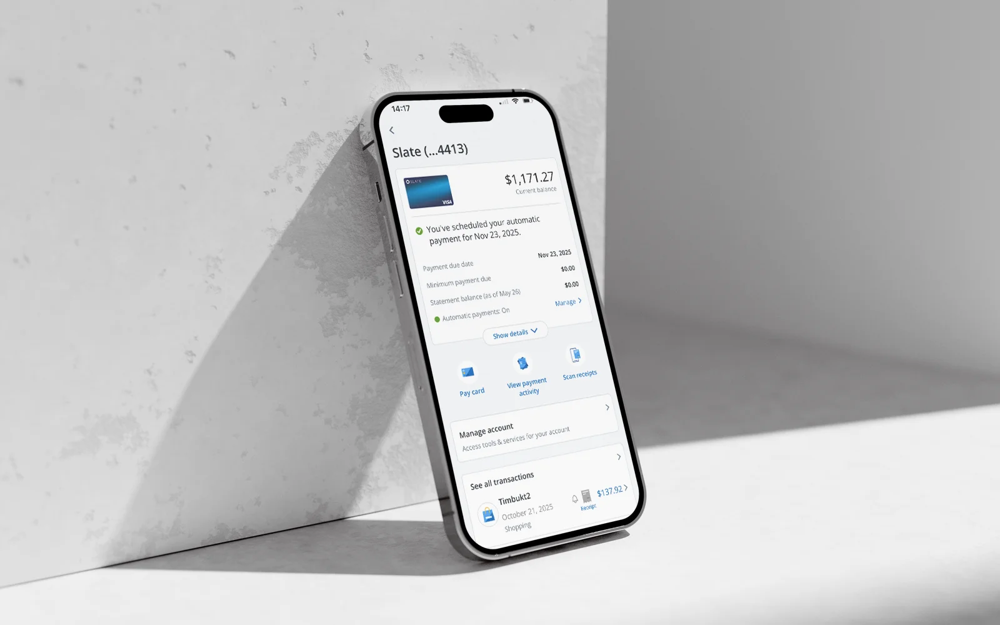
Chase Receipt Scanner — Effortless Receipt Capture
Chase Receipt Scanner is a concept feature that reimagines Chase's discontinued receipt capture tool, allowing users to scan, upload, or forward receipts that are automatically matched to transactions to provide better support for returns, warranties, and recordkeeping without added complexity.
Background
Why Chase Receipt Scanner?
I've always struggled to organize receipts and find them later for returns, warranty claims, or recordkeeping. As a long-time Chase user, I saw an opportunity for a more seamless in-app receipt capture feature. My vision was a single system where users could upload or forward email receipts, scan paper ones, automatically match them to transactions, and set warranty or expiration reminders.
Empathize
User Interviews
Goal
Through user interviews, I wanted to understand how users currently manage receipts, where the biggest pain points exist, and what they expect from a built-in receipt management feature in a banking app.
Approach
I conducted 6 semi-structured user interviews, each lasting 20–25 minutes, with participants of varied ages, professions, and household types.
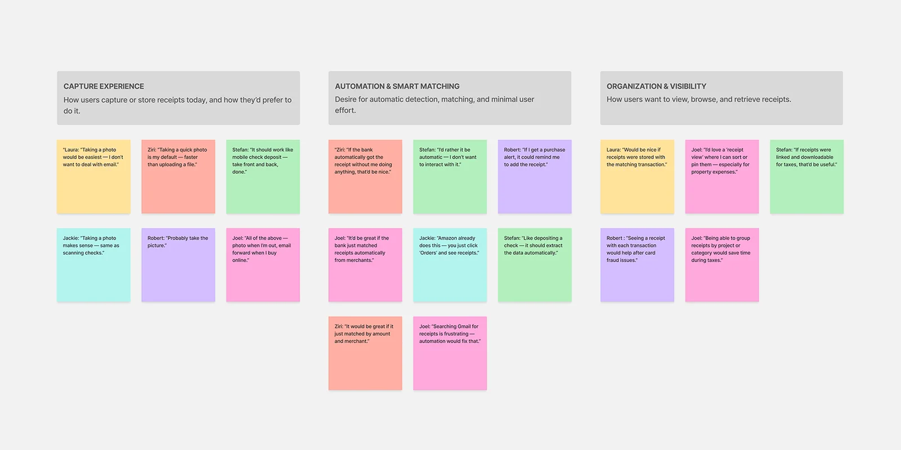
Affinity Map
View Affinity MapKey Findings
- Capture Experience Users want capturing a receipt to be quick, familiar, and flexible.
- Automation & Smart Matching Automation is the most desired capability. Users expect automatic recognition, matching, and minimal manual tagging.
- Organization & Visibility Users want a single, centralized "home" for receipts inside their banking app.
- Reminders & Warranties Useful only for expensive or time-bound items.
- Trust, Security & Control Users trust their bank more than any other app for sensitive data.
- Simplicity & Timing Users take action only if it's fast and fits habits.
Competitive Analysis
I conducted a competitive analysis of the receipt management ecosystem, evaluating Expensify, Shoeboxed, QuickBooks, American Express, and Warranty Keeper / ReceiptBox.
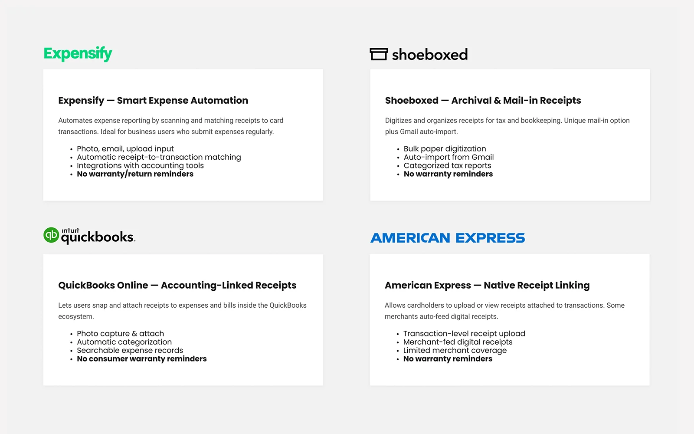
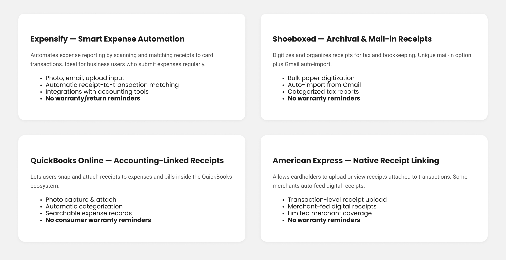
Opportunity for Chase: Most competitors focus on business users, and none combine receipt-to-transaction matching with warranty or return reminders within a trusted banking ecosystem.
Define
User Persona
Based on my research, I defined a primary user persona: Amanda Torres, "The Busy Family Manager," a busy, tech-savvy customer who actively manages family finances and expects receipts to be captured easily on the go and securely stored within the Chase app, so she can access proof of purchase without extra effort when returns, warranties, or disputes arise.
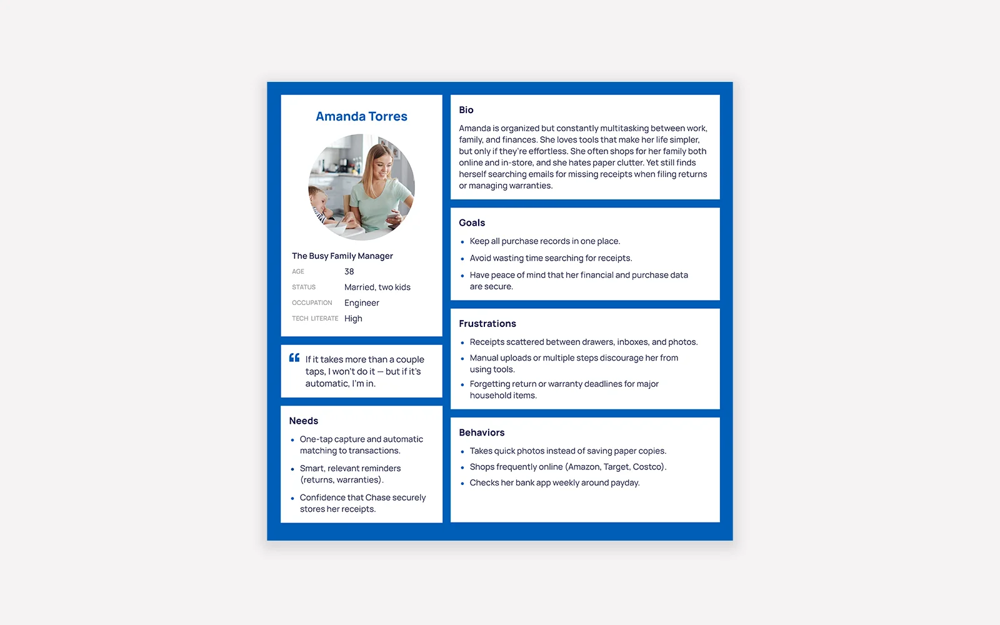
Amanda Torres, The Busy Family Manager
POV Statement
Users need a fast, familiar way to capture receipts without disrupting their routine. They also value reminders only when they're contextually relevant, such as for warranties, big purchases, or time-sensitive returns.
How Might We Questions
- How might we make it easier for users to capture receipts?
- How might we help users set important reminders in a user friendly way?
Ideate
Priority Features
Based on insights from user interviews, competitive analysis, and the defined user persona, I identified key pain points and translated them into a focused set of MVP features.
User Flow
I created a user flow to define how the feature would work end-to-end, mapping the experience from scanning a receipt to attaching it to a transaction and accessing it later, with a focus on reducing friction, minimizing steps, and maintaining speed and clarity.
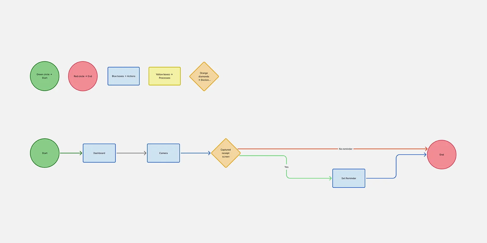
Design
Mid-Fidelity Wireframes
I created mid-fidelity wireframes and ran a moderated, remote usability test with five participants to validate the end-to-end flow before moving into high-fidelity.
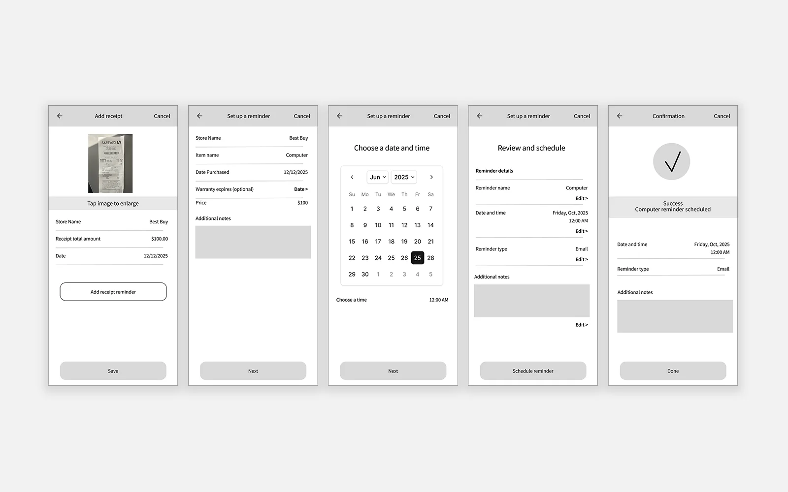
What Was Tested
- The "Add a receipt" flow: photo capture, confirmation, and optional reminders.
- Early ideas for warranty and return reminders.
- Clarity of receipt capture and warranty setup confirmation messages.
Key Findings — Mid Fidelity
- End state is missing Users need to clearly see where the receipt lives after confirmation; without this, the flow feels incomplete.
- Retrieval paths are unclear Scanning is easy to find, but users expect receipts to live in Transaction Details and a centralized Receipt Center.
- Camera layout should follow check deposit patterns Users expect stacked front and back capture; the side-by-side layout felt cramped.
- Back of receipt should be optional Many users questioned its necessity, suggesting an "Add another page" option instead.
- Predefined quick-action reminders preferred Users favored quick-action reminder options (30, 60, 90 days) rather than manual entry.
Prototype
High-Fidelity Design
Based on mid-fidelity usability feedback, I revised several screens and introduced a new dashboard state that clearly confirms when receipts and reminders have been successfully added.
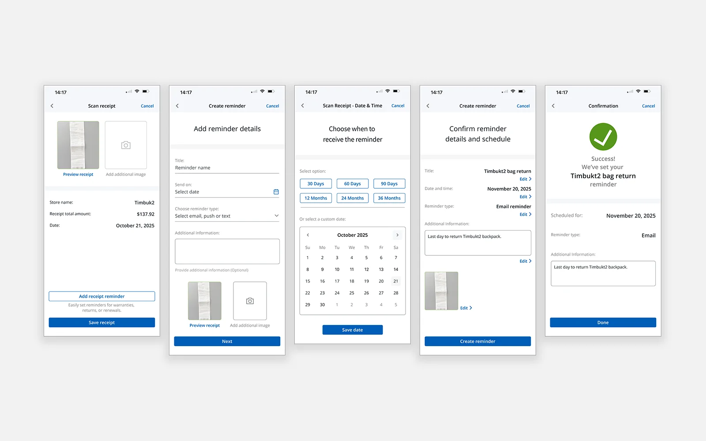
Visual Identity
To ensure the Scan a Receipt feature and high-fidelity screens integrated seamlessly with the Chase app, I studied Chase's existing branding, including color usage, typography, and UI patterns, and aligned the designs to the established system. I also designed two new icons, Scan a Receipt and Receipt, that follow the visual style of Chase's existing iconography.
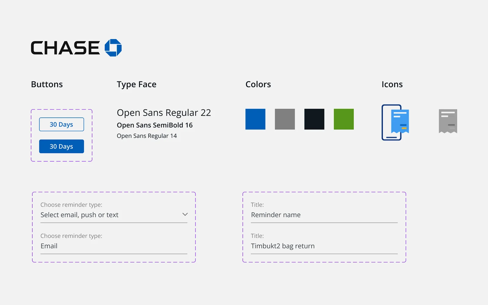
Chase UI Elements
Usability Test
Usability Testing
The goal of the usability test was to evaluate the clarity, usability, and perceived value of the Receipt Scanner concept within the Chase mobile app. I focused on whether users could easily scan and save receipts, understand where they are stored, and set return or warranty reminders. The study also identified friction points in the core task flows and validated alignment with existing Chase app patterns, language, and visual hierarchy.
Objectives
- Determine if users can find and complete the "Add Receipt" and "Add Receipt + Reminder" flows without assistance.
- Measure how confident participants feel after saving a receipt or setting a reminder.
- Observe how users interpret where saved receipts live within the app.
- Evaluate whether the language and tone feel consistent with Chase's trusted brand voice.
- Capture qualitative feedback on UI clarity, copy, and feature expectations.
Method
- Format: Prototype walkthrough (moderated via Zoom recording).
- Participants: Six users, current or recent Chase users with a mix of digital proficiency.
- Tasks: Add a receipt to a recent transaction, then add a receipt and set a reminder for a 30-day return policy.
- Metrics: Ease of completion (1–5 scale), confidence in completion, comprehension of reminder, tone and trust perception, and open-ended qualitative feedback.
- Test Tools: Figma prototype simulating the Chase mobile app UI with two functional flows.
Test Flows
- Add a Receipt Participants simulated scanning or uploading a store receipt to attach to a recent purchase, such as a backpack.
- Add a Receipt + Reminder Participants used the same receipt flow, then added a return reminder with prefilled or editable date and method options, such as notification or email.
What Worked Well
Usability testing validated the experience as intuitive, low-friction, and aligned with Chase's design patterns. Users quickly understood receipt capture, trusted that receipts were saved, and recognized clear value for returns and warranties.
Prioritized Changes
Based on usability testing, I made three prioritized changes to improve clarity and confidence.
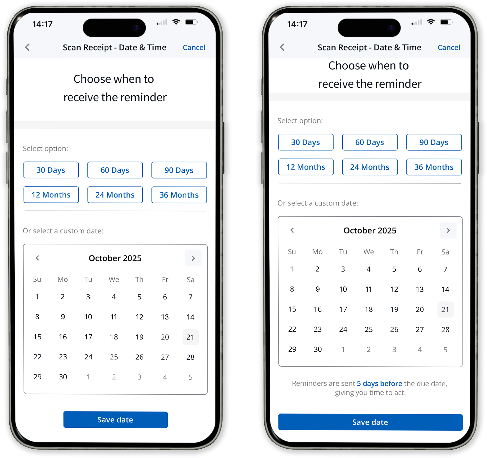
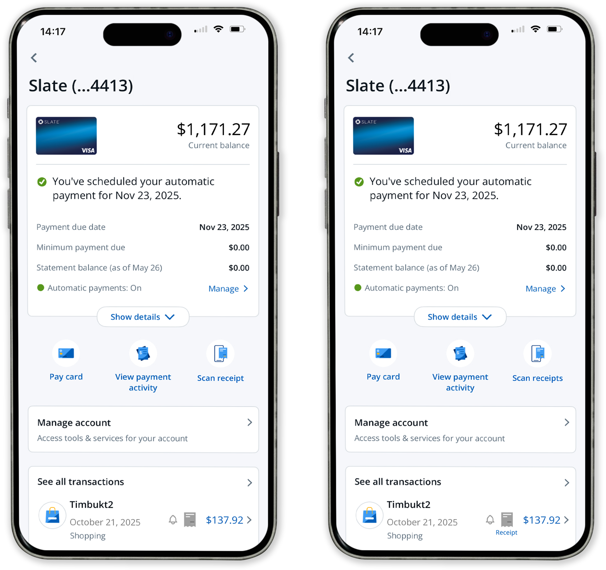
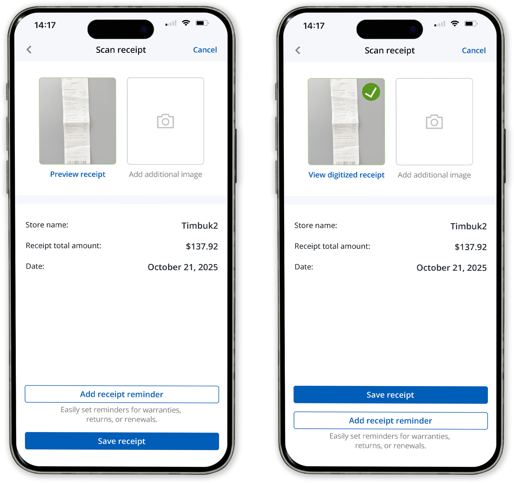
Final Design
Selected Screens
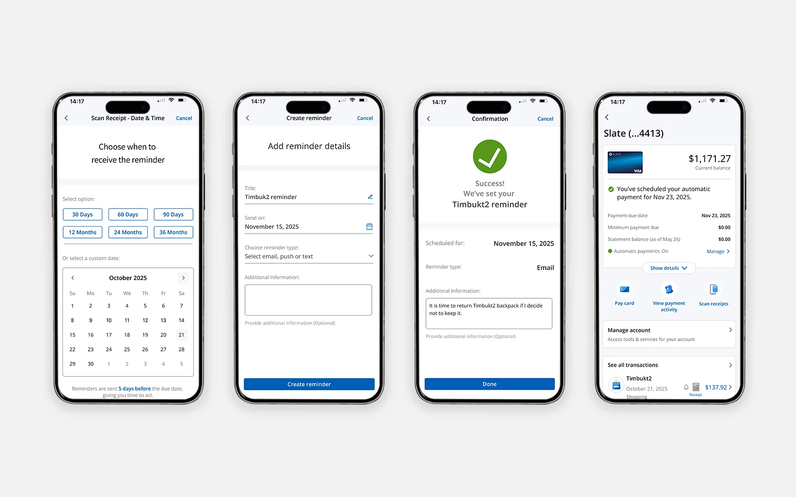
Explore the full interactive prototype in Figma
View PrototypeConclusion
Key Takeaways
Completed in just two weeks, this project encouraged me to be intentional about where to focus my time. Through research, iteration, and usability testing, I gained a deeper appreciation for how clarity, feedback, and hierarchy influence user confidence. The final design supported smooth task completion and strong ease-of-use feedback, resulting in an experience that feels clear, trustworthy, and genuinely helpful.
Future Enhancements
- Dual entry points: Support both a global "Scan Receipts" flow and an in-transaction "Attach Receipt" flow.
- Link confirmation & correction: After a scan, show the matched transaction and let the user confirm or change it inline.
- Context-aware onboarding: Add a one-time tooltip, short feature card, or brief video explaining where receipts are saved and how reminders work.
- Email forwarding: Forward receipt emails to a dedicated address, where they are automatically matched to credit card transactions.